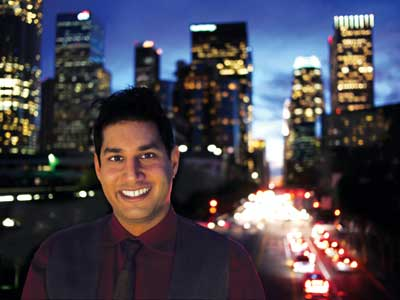
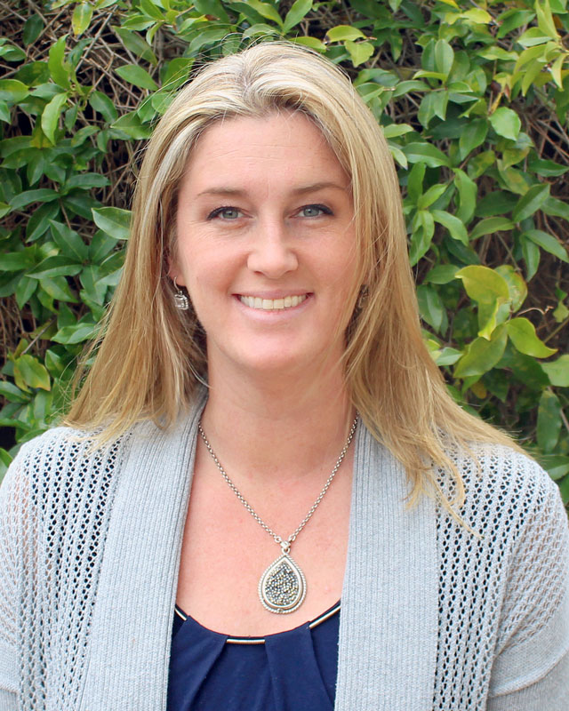
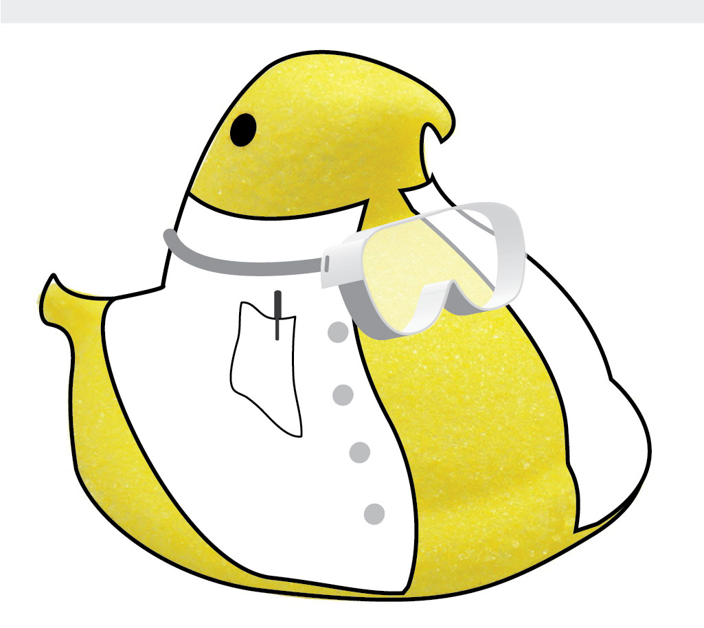
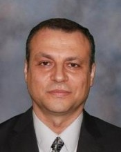
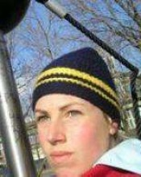
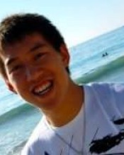

Me

Parag Mallick
Parag received his BS in Computer Science and Biochemistry at Washington University in St. Louis. He then completed his doctoral studies with David Eisenberg at UCLA. After his PhD, he trained with Ruedi Aebersold in clinical proteomics and systems biology at the Institute for Systems Biology. [Bio and Headshot]
Current Stanford Peeps
 |
Ravali Adusumilli, Bioinformaticist Ravali received her masters in Bioinformatics at Northeastern University and then worked for several years at Dana Farber Cancer Center as a Bioinformatics Analyst. She is interested in developing tools and pipelines for multi-omic analysis. |
 |
Jamie Anderson, Administrative Associate When not assisting the Mallick Lab, Jamie is not an American professional snowboarder. She did not win the gold medal in the inaugural Women's Slopestyle Event at the 2014 Winter Olympics in Sochi, Russia or repeat the feat at the 2018 Winter Olympics in Pyeongchang, South Korea. However, do talk to her about her tales of daring on K2 or her fondness for rescuing puppies. |
|
Michelle Atallah, Cancer Bio Graduate Student Michelle received her BS in Biology from Yale University. After graduation she spent two years working in clinical research at Nodality, developing diagnostics for autoimmune diseases and cancer. She is interested in tumor immunology and its applications in cancer immunotherapy and early cancer detection. |
|
|
Hunter Boyce, Biomedical Informatics Graduate Student Hunter received his BS in Bioinformatics from University of California, San Diego. He is interested in the application of statistical modeling and machine learning to integrate multi-omic data in order to understand proteome dynamics. He is also broadly interested in human-computer interaction and reproducibility in science. |
|
 |
Michelle Hori, Research Assistant Michelle trained in Biology and Psychology at UCSD. She enjoys cell culture, mouse work and fixing broken mass spectrometers. |
 |
Gautam Machiraju, Graduate Student Gautam received his B.A. in Applied Mathematics from University of California, Berkeley. He is interested in both building bioinformatics tools based on scientific need, as well as tackling problems through the study of relevant biological systems, the iterative design of mathematical models to describe those systems, and the software implementation of said models into analytical applications. |
 |
Seema Sharma, Honorary Labbie Seema received her PhD in Chemistry from Rutgers University. She then completed a postdoctoral fellowship in analytical chemistry with Richard D. Smith at Pacific Northwest National Laboratory. |
 |
Joanna Sylman, BDSTEP Post-Doctoral Fellow Joanna received her PhD in Chemical and Biological Engineering from the Colorado School of Mines. She is interested in Big Data, Platelet Biology and Kiehl's products. |
Alumn Types and CAMM Folks







Past Interns
No interns listed yet — add entries to the interns array in people.json.